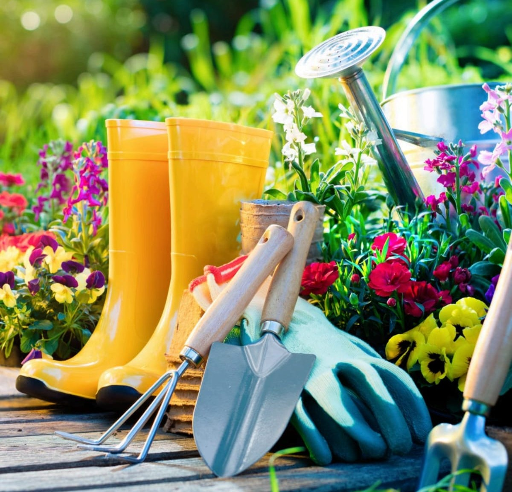

Gardening Tools for a Beautiful and Healthy Garden
Gardening is one of the most relaxing and enjoyable activities that brings people closer to nature. A beautiful garden not only improves the appearance of your home but also creates apeaceful and refreshing environment. to maintain a healthy garden, having the right gardening tools is very important.
The image above shows a collection of essential gardening tools used for planting, watering, digging, and caring for plant.Tools like watering cans,hand forks,gloves, boots, and digging spades help gardening work comfortably and efficiently.
A watering can is useful for gently watering plants and flowers without damaging them. Gardening gloves protect hands from dirt, throns and small injuries while working in the soil. hand tools such as towels and forks help loosen soil, remove weeds, and plant seeds easily.
Using proper gardening equipment saves time and makes gardening more enjoyable for beginners and experienced gardeners alike. high-quality tools also help maintain the health of plant and improve gardening results.
whether you have a small home garden or a large outdoor space, choosing the right gardening tools can make gardening easier, cleaner, and more productive. Gardening is not just a hobby- it is a wonderful way to connect with nature and create beauty around your home.